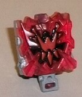
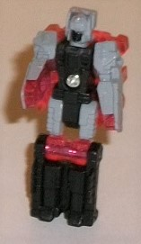
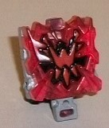
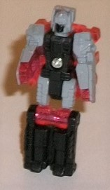
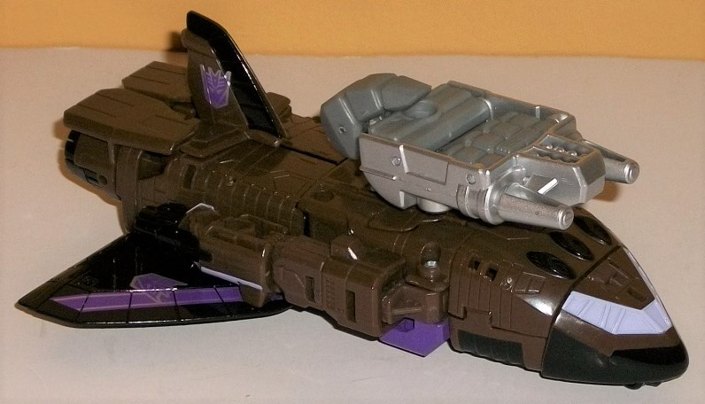
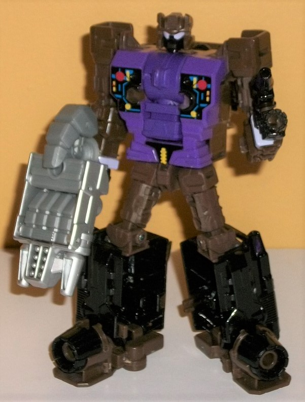
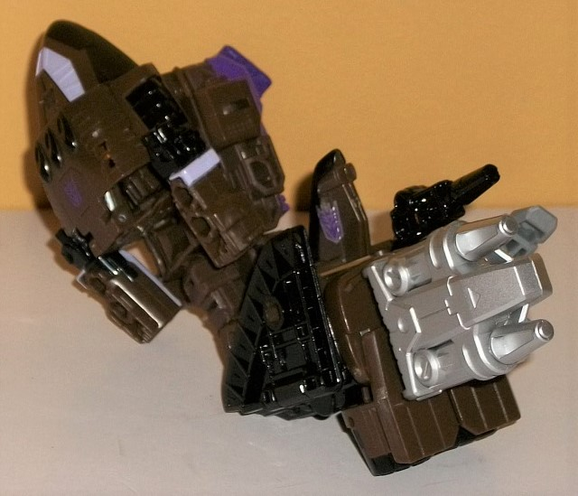
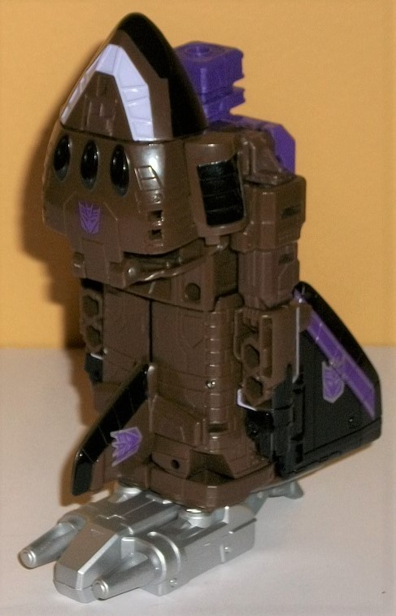

 
Size : Prime Master
Difficulty of Transformation : Very Easy
Color Scheme : Black, transparent red, gray, and some moderately light red
Individual Rating : 3.7
Allegiances
: Decepticon
Set Price
: ~$25 (U.S.)
 Megatronus
(Prime Wars)
Megatronus
(Prime Wars)


Size
: Prime Master
Difficulty of Transformation
: Very
Easy
Color Scheme
: Black, transparent
red, gray, and some moderately light red
Individual Rating
: 3.7
(NOTE: Because this is a repaint, this is not a full-blown review. This mainly covers any changes made to the mold and the color scheme, and merely compares it to the original PotP Megatronus. For a review on the mold itself, read the review of the original PotP Megatronus/Bomb Burst set here .)
Megatronus' release without
a Pretender shell to call his own has the "core" portion of the toy set
in a transparent red plastic-- which works very well not just to emphasize
the eeevilness of the guy, but also makes more sense as a energy "core"
for toys than the gray plastic on the original. The Megatronus symbol in
the middle of the core mode is a slightly lighter shade of solid red paint
on this transparent red plastic, with some black outlining it to make the
actual symbol more obvious. I would've preferred the Megatronus symbol
a more obviously different shade of color than the transparent red plastic,
but it still works pretty well for the character. Megatronus' colors in
robot mode are mostly black and gray-- black on the lower legs, body, and
painted on the robot face, and gray on the upper legs, the rest of the
robot head, and painted on the outside of the arms (the inside of the arms
are unpainted transparent red plastic, along with the knees). The gray
and black go together okay enough, but by themselves they're rather dull,
boring colors. The bit of transparent red shining through does help give
this mode some much-needed color, even if I dislike that they didn't paint
the entire arms the same color. Still, even ignoring the red, the breaking
up of the gray and black on the body and legs-- and the usage of more than
one paint app on the head-- makes the robot mode look more visually appealing
here than on the original version.
No mold changes have
been made to this version of Megatronus compared to the mass retail one--
beyond the obvious removal of the Pretender shell accessory, of course.
 Blast
Off
Blast
Off
Size
: Deluxe
Difficulty of Transformation to Robot:
Easy
Difficulty of Transformation to Leg
:
Very Easy
Difficulty of Transformation to Arm
:
Very Easy
Color Scheme
: Dark dull olive brown,
black, moderately dark purple, and some light milky gray, silver, yellow,
lavender, red, dark blue, and flat dark purple
Rating
: 8.7


Not satisfied with the
original
Combiner Wars Blast Off
being a
jet repaint? Well, it's a few years late, but Hasbro finally got around
to giving the space shuttle Combaticon his own mold! Huzzah! In space shuttle
mode, Blast Off gives off a slightly futuristic vibe, with the way the
cockpit area doesn't look like shuttles today-- the windows are much more
angular, and the nosecone as a whole isn't as long as you'd expect. The
wings could also stand to be a bit bigger, as well, and the thruster parts
poke out from behind the back end a bit more than they would on the real
thing. Still, we're talking about a space shuttle that combines with military
vehicles here; it doesn't concern me as much as it would if Combiner Wars
were a more realistic line. The biggest issue I have with this mode is
the very obvious robot arms just hanging out there on the sides, without
any real attempt to hide them-- yeah the fists are turned downwards, but
you can still see the "back end" of them plainly, complete with two fist-sized
holes on the topside of each lower arm! The end of the arms ends in small
additional thrusters, which adds slightly to the more futuristic take,
but I still really wish there was SOME way they could have integrated those
arms into the space shuttle body better. For mold detailing, this toy has
it pretty good, with armor paneling and aerodynamic lines all over the
place, almost from front-to-back; the only exception are the top of the
rocket pieces, which only have a few basic details on them. However, this
is pretty forgiveable, since those pieces become the bottom of the robot
feet. The hand/foot/gun piece that comes with Blast Off (and that comes
with all Combiner Wars deluxes) has some unique detailing on the top/wrist
side as well, with some large bolt-like details near the back, and dual
wide blasters that narrow to smaller nozzles. (Blast Off also comes with
another, smaller, gun accessory that ingeniously stores underneath the
cockpit in this mode, with a little bump to make it look like a landing
gear wheel.) For colors, of course Blast Off stays with his G1 colors,
so he's mostly a dark olive-y brown, with some black on the wings and the
underside of the nosecone. There's also some black paint on the top of
the tailfin, the small faux thrusters on the arms, the real thrusters on
the back end, and on three oval details on the mid-point of the nosecone.
Some fairly dark purple is also used, mostly visible in this mode on silver-bordered
stripes on the wings to break up all the black paint, but also on the Decepticon
symbols on the wings, tailfin, and top of the nosecone (Blast Off is REALLY
proud to be a Decepticon, yeesh!), though the one on the nosecone is not
bordered by silver, which makes it hard to make out against the olive green.
There's also a titch of lavender used on the cockpit, which contrasts VERY
well against the olive green-- I wish this shade was used more on the toy,
it's a really superb accent color. The hand/foot/gun weapon is light milky
gray on the actual hand portions, with the weapon top/"wrist" painted silver.
The main "plug" for the hand/foot/gun in this mode is smack dab in the
center of the top of this mode-- it doesn't integrate with the shuttle
all that well, but these accessories rarely do. There's also two similarly-sized
ports on the back end of each lower arm, as mentioned before, and ports
on the inside of the engine exhaust bits, which is a nice surprise.
Blast Off's transformation
is straightforward, though perhaps a titch more complex than most CW deluxes.
First, fold back the nosecone onto his upper back, and then fold in the
upper portion of the nosecone into the lower; then, fold out the arms from
the sides and up to form, obviously, the robot arms. Next, fold up the
exhaust port pieces and the wings back, then separate that whole rear section
and rotate both halves down to become the feet. Finally, in a completely
unnecessary step but one that is nonetheless appreciated, the tailfin halves
can rotate further into the back of each leg so they're not just poking
out from the more visible inside portion of each leg. The end result is
fairly G1-accurate, but with considerably more detail, of course-- plus,
no more chubby arms made out of halves of the space shuttle anymore, even
though we pay for that in vehicle mode. The usage of the exhaust ports
for the feet looks pretty neat, and the size of them helps keep Blast Off
nice 'n stable in this mode. The wings do stick out a bit from behind the
legs, but for an aerial Combiner Wars toy it's to be expected, and they
aren't particularly cumbersome eyesores, so I find them to be only minor
downsides. The upper legs are bit small compared to those large lower legs,
but it's still a minor issue, given the transformation. The arms are, of
course, pretty perfectly proportional, with some nice lavender stripes
on the lower arms and peg holes at the end of the faux exhaust ports on
the wrists, allowing Blast Off to form a "big fist" with his hand/foot/gun
accessory in a manner akin to
Rook
, if you don't
want him to hold it like a traditional weapon. The headsculpt is spot-on,
with a large forehead vent and smaller squared antennae on the sides of
his head, and with large lavender eyes and a black faceplate. The chest
is fairly flat detail-wise (though there's some nice angular details around
the waist), making the only large section of this mode that isn't revealed
in vehicle mode a bit of disappointment in that respect-- at least mold-wise.
The paint apps on the chest pegs are really nice and ape the G1 sticker
details quite well, having a black "base" with some blue "circuitry" details
amidst some yellow and red button-like details. Oddly, the purple plastic
used for the chest-- which helps break up the olive brown immensely in
this mode, by the way-- is of a slightly brighter shade than that used
for the combiner port in the middle, but only just. It's not a huge issue.
In a nifty twist, if you don't like the flat design for Blast Off's chest,
you can rotate his torso around (and his limbs appropriately) and use his
back for the chest if you want to, giving him a bit more mass up there,
with the broad folded-up nosecone making for a nice alternate torso configuration
in the front (though this means the purple isn't nearly as evident in this
mode). Blast Off's articulation is stellar in this mode-- he can move at
the head, shoulders (at three points), elbows, rotation at the waist, and
movement at the hips (at two points), knees, and ankle tilts. Given how
well-balanced he is, this means he can get into a ton of great poses.


As with most Combiner
Wars toys, Blast Off's arm mode is his robot mode, but with a few changes.
The shuttle-cockpit backpack has been extended out and up a little to make
for a nice bit of "shoulder armor", while the robot head is folded back
inside and the combiner port in the chest is folded out. The two halves
of the tailfin are rotated around, and then both legs are pegged together,
with the gun accessory plugged into the bottom to become the hand. Finally,
the robot arms are rotated down a bit at the shoulders and folded backwards
to... kinda hang off the sides of the shoulder of this arm mode. The robot
arms really don't have anywhere to go, and even worse, they don't even
peg together anywhere; good thing the joints are nice 'n stiff, otherwise
these things could get in the way. As is, they're mostly just eyesores.
The bottom folded-up back half of the shuttle/robot legs makes for a a
great, solid lower arm, and the blasters form a nice "wrist gun" for the
combiner mode hand. The shuttle cockpit, as mentioned, forms a nice little
extra mass for the shoulder and helps accentuate the mode with some more
lavender color from the cockpit. Otherwise the moving of the purple to
the inside of the shoulder makes this mode more one-tone, being mostly
olive brown with a bit of black and silver (which works better as a combiner
arm than as a stand-alone figure). As with basically every Combiner Wars
arm mode, in this mode Blast Off can move at the shoulder (at two points),
elbow (at two or three points, depending on whether the robot knees are
facing forward or not), wrist rotation, and at the thumb (at two points)
and the base of his four fingers (all moving as one joint).
Blast Off's leg mode
is mostly based off of his space shuttle mode, but with the cockpit section
folded back into its robot mode "upper back" position, the combiner port
rotated up, and then the wings and exhaust port pieces folded down (in
respect to the top of the shuttle mode) while the weapon accessory is plugged
into the back end to become the foot. Just like with the arm mode, the
shuttle cockpit serves as a nice "kneecap cover" for this mode, and the
solidified color scheme of mostly the olive brown with some black works
well for a combiner limb. The overall look of the limb from the front is
a pretty solid rectangle, and makes for pretty good leg proportions; however,
it is a bit odd to have the wings actually folded BACK for an aerial vehicle
leg compared to forward. This-- combined with the folded-back thrusters--
does help to make Blast Off a bit more balanced mass-wise when looked at
from the side, however, so that the heel from the foot isn't jutting so
far back. As with just about every Combiner Wars leg mode, Blast Off can
move at the knee joint at two points in this mode, and he can rotate at
the ankle.
The Prime Wars Trilogy
"look-back" version of Combiner Wars Blast Off is a great update to the
G1 design, even if some elements of the space shuttle mode-- most notably
the very obvious robot arms, as well some proportional issues with the
body-- aren't stellar. The robot mode is fantastic, though, and I love
the option for two alternate chests. His appendage modes are also generally
solid (minus the obvious individual robot arms in arm mode). I think the
mold itself is also a SLIGHT upgrade from the original jet mold used for
him in Combiner Wars purely in terms of design, but of course it fits the
character
oodles
better and thus I'd recommend it more regardless.
Clear red Megatronus is a nice little bonus I guess, and does look better
than the mass release, but is generally easily forgotten in this 2-pack.
Reviews by Beastbot